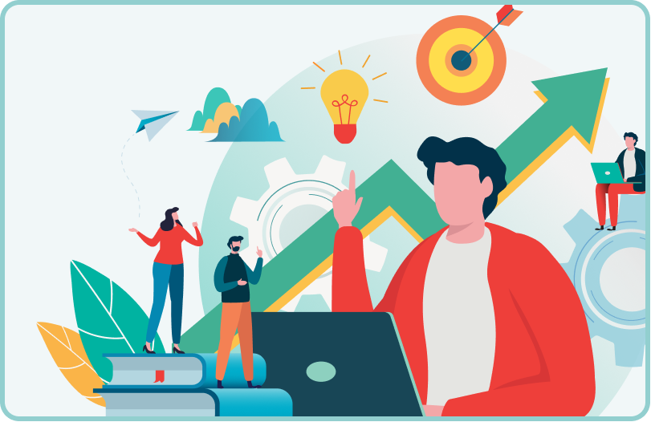
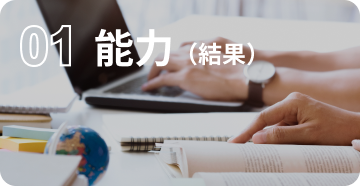

.png)
社会課題を見つけて「作る」と「売る」の両者に
「戦略」を持って解決できる
起業家精神のある人材がいま市場から求められています

\ 挑戦しないことがリスクになる時代 /
企業内での新規事業立ち上げ
起業家
企業内での新規事業立ち上げ
企業家

仕事を続けながら挑戦可能 新規事業のすべてが分かる
\ 現在１期で２８人が起業に挑戦中 /

アントレプレナーシップ
いま日本では起業家精神を持った人材の育成に国を挙げて取り組んでいます。
市場の課題を調査して、解決するプロダクトを開発して
ビジネスとして普及させることができる人材になることが
独立の有無は問わず求められる時代が来ます。
これからの時代に求められる人材とは？
.png)
社会課題を見つけて「作る」と「売る」の両者に
「戦略」を持って解決できる
起業家精神のある人材がいま市場から求められています

\ 挑戦しないことがリスクになる時代 /
企業内での新規事業立ち上げ
起業家
企業内での新規事業立ち上げ
企業家
fwywd ではこの人材としての市場価値が高く、
これからの日本や世界の課題を解決できる人材の輩出を目指します。

自立した学びが必要な時代になっており、
いくら能力が獲得できていても
能動的な学びができないと需要が低くなっている

\ これからは能力獲得の過程も注目される時代 /
企業に必要な
能力（結果

新しいことの
学び方（過程）

fwywd では能力獲得の過程へもこだわり、
講師から教わる授業のような時間は設けていません


ハードルの高い課題に挑戦してクリアすることで
調べて解決する自立した力を付けられます

.png) なら
なら
ハードルの高い課題への挑戦のデメリットは 多くのケースが折してしまうこと fwywd では志の高い良き仲間との支え合いで モチベーションを維持！
\ 実際の fwywd ユーザーの声を聞けば絶対に納得 /
無料説明解へ申込み
差別化ポイント


起業に必要な実践的なカリキュラム
最も能力の獲得に時間を要する技術のプロダクト開発を中心に１年間の学びを進めます。 その中にも、市場の需要を調査するマーケティング視点や、 そのプロダクトでの解決策をビジネスに落とし込んだ時の良し悪しを 測るファイナンス視点なども同時に学びます。
学び手が主体のコミュニケーション
良き仲間との学びがモチベーションを高めます。 また課題がわからずに躓いたときには仲間と一緒に課題解決ができます。 その結果、自立して能動的に取り組める人材であることが証明されます。

質の高い人のみが所属
fwywd では入学試験が設けられており、課題に対する取り組む意欲が低い人は脱落します。 一見ハードルが高く感じますが、この施策により「やらないのが当たり前」から「やって当たり前」という向上心の高い文化ができ、学びの質が劇的に高まります。 ※ 入学試験以降も最初の１年間は各課題に対する提出期限が設けられています。

１年間で終わりではない
起業に必要な能力やマインドセットを獲得できた１年後からがスタート。 能力の高い人同士で新たな学びやプロジェクトをスタートさせることができます。

仕事を続けながら取り組める
起業家精神を学ぶことが目的であり、独立は１つの手段でしかありません。 この学びは企業勤めの方の今の仕事へも良い影響が見込めるため、現状の仕事を続けながらを 推奨しており、多くの人が参加できる条件です。
人生の転機になっています
.png)
fwywd １期生 名前 太郎
サンプルテキストああサンプルテキストああサンプルテキストああ サンプルテキストああサンプルテキストああサンプルテキストああ サンプルテキストああサンプルテキストああサンプルテキストああ サンプルテキストああサンプルテキストああ
.png)
受講の理由は〇〇が最大のポイントです
fwywd １期生 名前 太郎
サンプルテキストああサンプルテキストああサンプルテキストああ サンプルテキストああサンプルテキストああサンプルテキストああ サンプルテキストああサンプルテキストああサンプルテキストああ サンプルテキストああサンプルテキストああ
.png)
fwywd を受講してから
ストレスなく〇〇できるようになりました！
fwywd １期生 名前 太郎
サンプルテキストああサンプルテキストああサンプルテキストああ サンプルテキストああサンプルテキストああサンプルテキストああ サンプルテキストああサンプルテキストああサンプルテキストああ サンプルテキストああサンプルテキストああ
.png)
心が折れそうな学習量も
仲間と一緒だから頑張れます
fwywd １期生 名前 太郎
サンプルテキストああサンプルテキストああサンプルテキストああ サンプルテキストああサンプルテキストああサンプルテキストああ サンプルテキストああサンプルテキストああサンプルテキストああ サンプルテキストああサンプルテキストああ

起業家プラン
3,500 円/月(税込)
【起業へフルコミット】
自分の事業を作り上げるために 仕事を辞めた上で取り組む。 熱い仲間と共に過ごそう！
 運営側への質問対応
運営側への質問対応
スタンダードプラン
9,900 円/月(税込)
【知識のジムへようこそ】
一般的なジムと同じ価格！
仲間とともに課題に取り組んで
解決していけます
運営側への質問対応
フォロープラン
84,700 円/月(税込)
【入学試験期間２ヶ月限定】
専属メンターから隔週 90 分 技術などのメンタリング（計 4 回） * 入学後はスタンダードプランへ移行
運営側への質問対応入学金 99,800 円（税別）※ 入学試験の通過後
仕事を続けながら挑戦可能 新規事業のすべてが分かる
\ 現在１期で２８人が起業に挑戦中 /
{kind=link}
{kind=link}